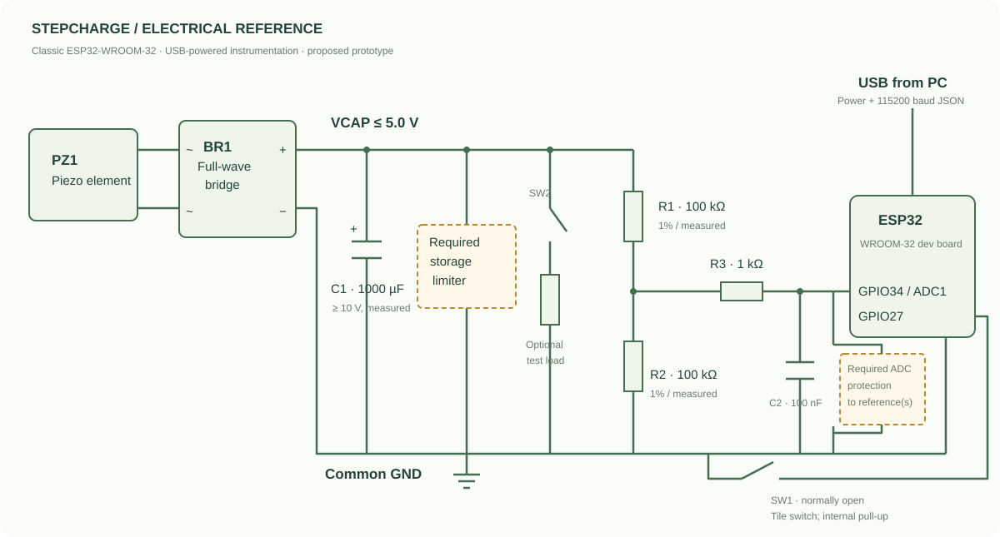

ENERGY HARVESTING / MEASUREMENT STUDIO
Every step tells a story.
Explore your tile’s electrical readings, one footstep at a time.
Connect via USB using desktop Chrome or Edge, or import a saved capture on any device.
—
Debounced mechanical switch—
Capacitor energy · ½CV²Waiting
No samples receivedSIGNAL OVER TIME
Storage voltage
Your latest 300 samples will appear here.
CURRENT MEASUREMENT WINDOW
Energy in perspective
- Net storage change
- —
- Mean net storage power
- —
- Net energy / step
- —
- Window duration
- —
Waiting for two samples.
Signed capacitor energy change, including losses and loads. This is not gross harvested energy.
DEVICE TELEMETRY
Behind the readings
- ADC raw
- —
- ADC voltage
- —
- Capacitance
- —
- Device uptime
- —
- Session
- —
- Schema
- —
FROM FOOTSTEP TO READING
The circuit, connected.
